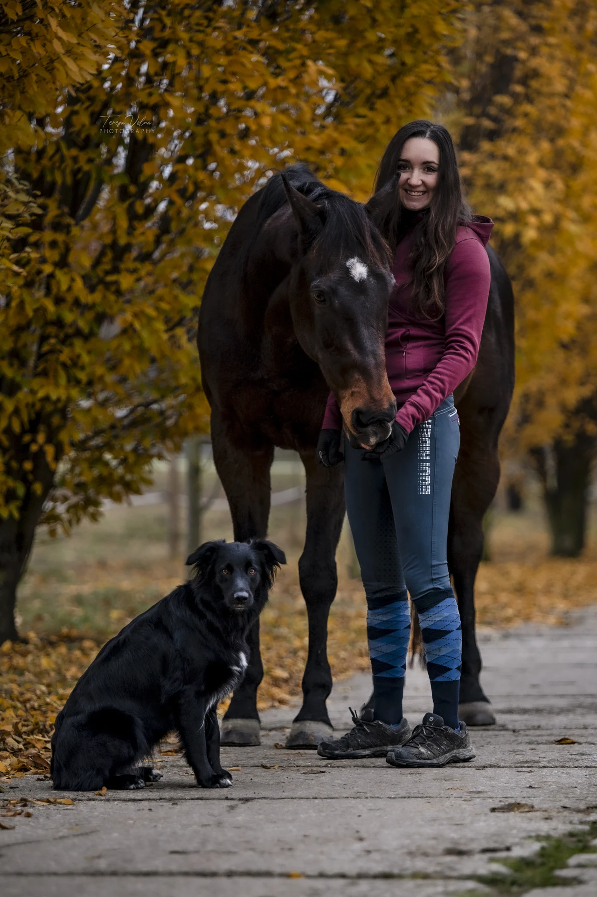
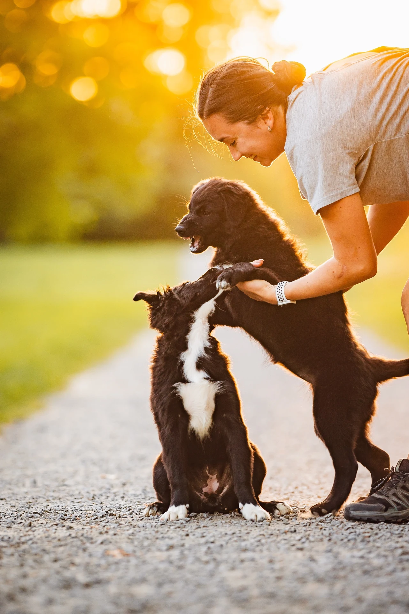

O mně
Jmenuji se Sabina Pospíšilová. Veterinární Univerzitu jsem absolvovala v roce 2022 a od té doby pracuji jako terénní veterinární lékařka. Ke zvířatům mě to táhlo odmala, doma jsme vždy měli psi, kočky i hospodářská zvířata. Nyní mám svého vlastního koně, 3 pejsky a stádo ovcí a tak se můj pracovní život velmi úzce prolíná s tím osobním. Jakožto majitel zvířat, dobře znám situace, které vy - majitelé řešíte každý den a to nejen z pohledu veterináře, ale i z pohledu člověka, který stojí na “druhé straně”. Právě tahle zkušenost mě naučila hledat cesty, které fungují nejen ideálně na papíře, ale hlavně v reálném životě.


Ke své práci přistupuji s respektem k zvířeti i k majiteli – bez zbytečného tlaku, ale s jasným odborným přístupem a snahou hledat řešení, která dávají smysl medicínsky i prakticky. Největší část mé praxe tvoří koně, kde se věnuji preventivní péči, chirurgii, reprodukci i interní medicíně v terénních podmínkách. Současně ošetřuji psy, ovce a další hospodářská zvířata. Mám ráda medicínu, která není jen o rychlém „opravení problému“, ale o pochopení souvislostí a dlouhodobé péči.
Věřím, že kvalitní veterinární péče není jen o samotném zákroku. Je také o komunikaci, důvěře a schopnosti vysvětlit věci srozumitelně a na rovinu. Mojí snahou je být pro klienty oporou v náročných situacích i partnerem v běžné prevenci – protože dobrá medicína začíná dávno před tím, než vznikne problém.